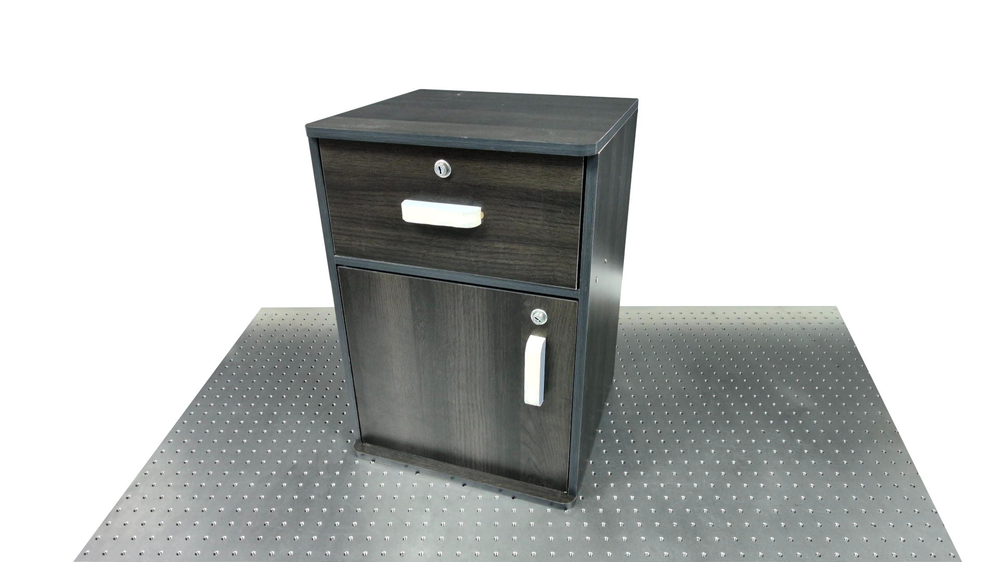
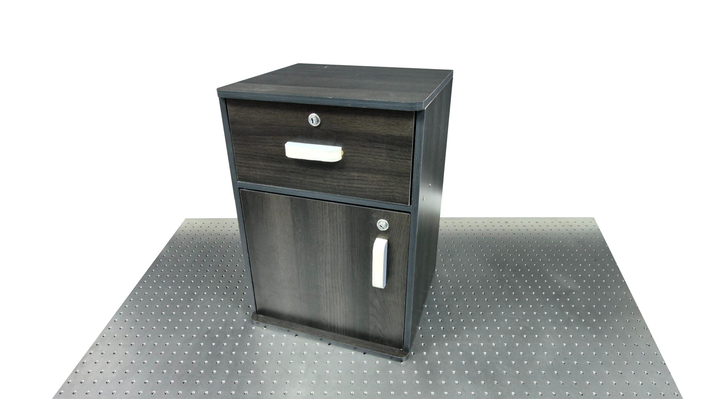

Modules and Results
Detection and Segmentation Module


Grasp Generation Module
● Scroll to zoom in/out
● Drag to rotate
● Press "shift" and drag to pan
 

We show the comparison of grasp poses predicted by our method and AnyGrasp. Handles of articulated objects typically constrain the grasp pose to an 1-DoF configuration. However, the 6-DoF predictions from AnyGrasp often yield tilted poses that cannot provide stable grasps. In contrast, our method exploits surface normals as priors to guide the grasp approaching direction and further refines the in-plane rotation through collision detection, resulting in more reliable and stable grasp poses.
Direction Inference Module
We illustrate the approach using four representative objects, one from each test category. For each object, we present the obtained samples, the fitted vMF distribution, the ground truth, and the predictions of the three baseline methods. By fitting the distribution and incorporating the surface normal as an inductive bias, our proposed method demonstrates greater robustness to high uncertainties when encountering previously unseen objects. Finally, we present results on real-world examples, using the esimated grasping points. These results demonstrate the successful transfer of our approach from simulation to real-world settings.